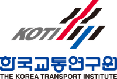

Employment
Research and Professional Experience
Research & Professional Experience

Korea Transport Institute (KOTI)
Sejong, Korea
Researcher | Transport Big Data Department
2025 – 2026
- LLM-based human mobility prediction using individual travel survey data
- Privacy-preserving synthesis of individual-level mobility data
- Congestion estimation for large gatherings using mobile phone location data
Ajou University
Suwon, Korea
Research Assistant | Movelab
2023 – 2025
Advisor: Prof. Jaehyun So
- Assessment of autonomous vehicle compliance with traffic laws and regulations using microscopic traffic simulation
- Development of hazardous driving indicators and detection algorithms using large-scale transportation data
Easy Traffic
Anyang, Korea
Intern | Digital Twin-Based Smart Mobility Traffic Information and Signal Operations Optimization
2022
Analyzed signal control system functions and data, identified improvements to signal operations, and supported traffic information collection and processing.
UT Information
Suwon, Korea
Intern | Traffic Information Services and Road Management System Operations
2021
Built variable message sign displays for the City of Suwon, prepared the operations manual for the national highway enforcement system, and supported GIS-based traffic data analysis.
Research Visits
Texas A&M University
College Station, TX
Visiting Student | Korea–US NSF IRES: AI×Mobility
Jan – Feb 2024
A one-month program combining online and on-site components, including a two-week on-site research visit. Funded by the National Research Foundation of Korea.
- Nighttime road image enhancement using generative adversarial networks